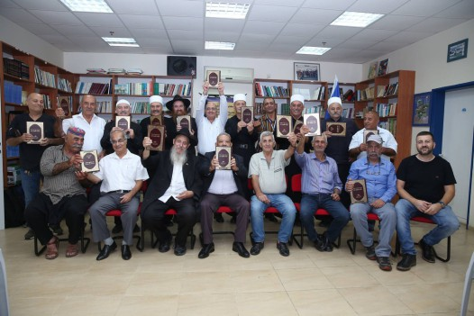

הוא היה מנהל מוכשר שהצליח לסייע בהקמת אימפריה חינוכית, ולצד זאת איש של חלומות שא
הוא היה מנהל מוכשר שהצליח לסייע בהקמת אימפריה חינוכית, ולצד זאת איש של חלומות שאותם דאג להגשים. היה זה שילוב נדיר באישיות של הרב בועז קלי ע”ה, שנפטר השבוע לבית עולמו * ר’ בועז שילב שני סמלים: סמל החינוך וסמל החדרת שבע מצוות בני נח בקרב אומות העולם. * איש לא עמד בפני חיוכו הנצחי: לא חבריו החסידים, לא
הוא היה מנהל מוכשר שהצליח לסייע בהקמת אימפריה חינוכית, ולצד זאת איש של חלומות שאותם דאג להגשים. היה זה שילוב נדיר באישיות של הרב בועז קלי ע”ה, שנפטר השבוע לבית עולמו * ר’ בועז שילב שני סמלים: סמל החינוך וסמל החדרת שבע מצוות בני נח בקרב אומות העולם. * איש לא עמד בפני חיוכו הנצחי: לא חבריו החסידים, לא הדרוזים אליהם הגיע עם הבשורה, ואפילו לא מנהל הבנק שהגיע השבוע לנחם את בניו

הרב דיסקין פקח עיניים מול היושב מולו, ספק נדהמות ספק חומלות. כחבר הנהלת המוסדות, ידע היטב את המצב הנוכחי: קשיים כספיים אדירים, חובות עתק, המנהל הראשי הרב שילדקרויט נאלץ לצאת זה תקופה ארוכה לחו”ל לגייס כספים. משכורות - אין. הלימודים התקיימו במרתפים ובתת–תנאים, וזה עוד לא הכול.
“מתוך רחמנות שיתפתי אתו פעולה”, סיפר השבוע הרב דיסקין בעת שהגיע לניחום אבלים בבית משפחת קלי. “ישבנו והגינו ביחד בדמיונות שלו כמו היו מציאות… למותר לציין, כי החלומות שלו כולם, התגשמו אחד לאחד. העדות לכך היא קרית החינוך המפוארת הנמצאת כיום בקרית שמואל, ומהווה דוגמה למוסד חינוכי מפואר, משוכלל המעניק את מיטב החינוך החסידי לכלל תושבי חיפה והקריות.
כזה היה הרב בועז קלי. חסיד עם דגלון נצחי, חיוך ממיס, סירטוק–תמידי, חולצה בחוץ שנותנת אשליה שהאיש שמולך הוא ‘מפוזר’, אבל בעצם היה חייל נאמן בצבאו של הרבי, חד וממוקד, שהעז לחלום, ועוד יותר: העז להגשים את החלומות שלו, לנחת רוחו של הרבי מה”מ.
נס ב’שטח’
ר’ בועז קלי נולד ביום ז’ בסיון תש”י, להוריו ר’ יעקב אריה וציפורה קלוסקי (לימים קלי), ממייסדי הקיבוץ הדתי ‘טירת צבי’ שבעמק בית שאן. לימים סיפר ר’ בועז בחיוך, כי אביו הגיע ממשפחה של חסידי אמשנוב אך למד בישיבת נובהרדוק משיטת המוסר. “הייתה ‘חקירה’ - כך בעגה הישיבתית - האם אבא הוא חסיד או ליטאי. אולם כשראיתי את אבא בשמחת תורה אומר הרבה ‘לחיים’ ומחלק בבית הכנסת של טירת צבי ‘לחיים’ לכל המתפללים, והוא רוקד ומקפיץ את כולם בשבילי הקיבוץ, ידעתי שהוא חסיד”…
לאורך השנים גדל וחונך ברוח הכיפות הסרוגות.
בשנת תשל”א נשא לאישה את רעייתו תבלחט”א מרת חדוה. הזוג הצעיר קבע את ביתו בקרית שמואל.
שמונה שנים מאז חתונתם, לא זכה הזוג להיפקד בזרע של קיימא. הרופאים עמם נועצו, לא נתנו סיכוי. גם הלחץ מצד החברים שכבר חבקו ילדים, היה גדול. בצר להם התחילו לחשוב על אימוץ ילדים.
מסובב הסיבות סיבב שבאותה תקופה הכיר ר’ בועז את הרב יגאל פיזם ואף החל להשתתף בשיעורים שמסר בליקוטי שיחות ובתורת חסידות. כששיתף פעם את הרב פיזם בצרתו, שאלו בפשטות “מדוע שלא תכתוב לרבי ותבקש ברכה לילדים?”
בתחילה היסס הרב בועז, אך לבסוף שיגר מכתב. וכבר באותו חודש זכו בני הזוג להיוושע… כשר’ בועז שאל את הרב פיזם מדוע הרבי לא השיב על מכתבו, ענה הרב פיזם: “הרבי הרי ענה לך בשטח”…
לאחר תשעה חודשים נולד בנם הבכור. ההורים רצו לקרוא לו על שם אחיו של ר’ בועז שנפל במלחמת ששת הימים, אך היו שהסתייגו מכך בשל נפילתו בגיל צעיר. כששאל את הרבי על כך, זכה לקבל תשובה “יעשו כעצת היראי שמים אשר במשפחתם”. לבסוף נקרא שמו מאיר בנימין (כיום משלוחי הרבי ברמת גן).
שלוש שנים לאחר מכן, בחנוכה תשמ”ב, נסעו ההורים ובנם כדי להודות לרבי באופן אישי. הם זכו להיכנס ל’יחידות’ כללית–פרטית במהלכה פנה הרבי לילד ושאלו אם יש לו אות בספר התורה של ילדי ישראל. כשהשיב בחיוב, ניכר היה על פניו של הרבי קורת רוח.
הדחיפה הראשונה
באותה תקופה טרם נמנה ר’ בועז על עדת חסידי חב”ד. הוא חש עצמו שייך עדיין לציבור הכיפות הסרוגות יוצאי הקיבוצים. את פרנסתו מצא בנגריית כץ (נגריה שלימים הפכה לשמש כבית הספר ‘בית חיה’ ומאוחר יותר ל’תומכי תמימים’).
באחד הימים הגיע המשפיע ר’ ראובן דונין לרב יצחק גולדברג ממגדל העמק וסיפר לו כי התרשם שבקריות מתגבשת קבוצה של חבר’ה צעירים איכותיים. בקבוצה היו ר’ בועז קלי, ר’ ישראל דוד, ר’ עמי וייס, ועוד. בעקבות זאת החל הרב גולדברג ללמוד עמם גמרא וחסידות. הקשר עם ר’ ראובן דונין גם הוא הלך ו’התחמם’.
באחד הימים הם ישבו אצל ר’ ראובן דונין, כאשר בשלב מסוים קם ר’ ראובן ממקומו ואמר “לא מזמן הגיע מרוסיה הסובייטית חסיד בעל מסירות נפש. הוא מגיע להתוועד כעת במגדל העמק, בואו ניסע”. כוונתו הייתה על ר’ מענדל פוטרפס. החבר’ה כולם קמו ויצאו לדרך מבלי להספיק להודיע בבית על היעדרותם.
בעידן שלפני הסלולרי, לא ידעו הנשים לאן נעלמו בעליהן. בשלב מסוים, כשדאגו, התקשרו זו לזו, והתברר שכל החבורה נעלמה לה, ורק אז נרגעו… הם הגיעו למגדל העמק, שם התוועד ר’ מענדל במתיקות. בשלב מסוים “התלבש” ר’ מענדל על ר’ בועז קלי, ואמר לו בעגה האופיינית לו “תִּיסָע לרבי”, וזה היה הדחיפה שלו לנסוע לרבי לראשונה בחייו יחד עם רעייתו ובנו, להודות על הולדתו של הבן.
לימים סגר ר’ בועז את הנגרייה ופתח חנות לריהוט בשם “הבקתה”. חיידק העסקנות של ר’ בועז החל כבר אז לקנן בו, ולא ארכו הימים עד שהחנות שלו הפכה לחצי בית–חב”ד… אנשים הגיעו אליו כדי לכתוב לרבי, ולצד הרהיטים בחנות התקיימו שיעורי תורה; פעילות זוטא החלה לבקוע מתוך חנות הרהיטים. גם את הרכב שלו נתן לפעילים לצרכי פעילות בשטח.
מהר מאד הרגיש ר’ בועז שהוא אינו מחובר עוד לשולחנות ולכיסאות. באותה תקופה החל הרבי מה”מ לדבר רבות על התעסקות בהפצת המעיינות ובשליחות. ליותר מכך ר’ בועז לא היה צריך… הוא סגר את חנותו והחל לפעול בהפצת המעיינות.
מדי פעם בפעם היה מגיע לקיבוץ ‘טירת צבי’ לבקר את הוריו. את הביקורים הללו ניצל כדי לערוך פעילות עם ילדי הקיבוץ במסגרת מועדון ‘צבאות השם’ שהקים שם. הוא עודד את הילדים להניח בכל חדר שלהם קופת צדקה וספר קודש. הוא גם החל לחולל פה ושם ‘סדרים חדשים’. לאחת מאסיפות החברים שהתקיימה, התקבלה החלטה רשמית הנוגעת לר’ בועז: החברים שמחים שאתה מגיע לבקר את ההורים, אבל אל תכניס לקיבוץ מושגים חדשים…
בכלל, ר’ בועז קלי ניחן בעקשנות של קדושה, אבל זו הייתה עקשנות עם חיוך תמידי. הוא היה ‘בולדוזר’ בנשמתו, ולא יכול היה לשקוט על שמריו. כל מה שעשה, עשה עם פנים נעימות וקורנות.
גלים סוערים ויד איתנה
בשנת תשמ”ג נכנס הרב בועז קלי לניהול מוסדות החינוך החב”דיים בקריות, שסיפקו מענה עבור ילדי אנ”ש בחיפה ובקריות. מוסדות החינוך היו אז רק בראשית הקמתם. כתות בודדות שהיו בהם מספר מועט של ילדים. גן ילדים - ותו לא.
עם השנים המוסדות הלכו והתרחבו. נוספה עוד כתה ועוד כתה, עוד גן ילדים ועוד מוסד. התקופה הייתה תקופה של ‘ראשית’ והקשיים היו גדלים. “היה צריך להתחיל את הכל מההתחלה”, נזכר אחד העסקנים.
ר’ בועז קלי הצטרף לר’ לייבל שילדקרויט, יבלחט”א, שניהל את המוסדות. כך בשנים הבאות, המוסדות הלכו והתרחבו לצד הקשיים הכספיים והחובות שהלכו והעיקו. למותר לציין כי תנאי הלימודים היו קשים, וההנהלה ניסתה לשרוד נוכח הקשיים שאפפו מכל עבר. המצב נמשך כך, עד שלימים אי אפשר היה להמשיך עוד במצב הזה. מנהל המוסדות הרב שילדקרויט נאלץ היה לצאת לחו”ל למשך תקופה ארוכה למטרת גיוס כספים, בעוד עמיתו בהנהלה, ר’ בועז, נשאר במטרה לנסות לנווט את הספינה הרעועה בגלי הים הסוערים שאיימו להטביעה. המוסדות כמעט קרסו, ור’ בועז נאלץ היה להתמודד גם עם הערבויות העצומות שעליהן חתם. לא פעם הגיעו מעקלים לביתו כדי לעקל את מה שלא–היה…
לימים סיפר ר’ בועז, כי באחת משיחותיו עם יבלחט”א ר’ לייבל שילדקרויט, הגיעו למסקנה שבעבר מסירות הנפש הייתה על קיום תורה ומצוות, וכיום מסירות הנפש היא סביב ענייני הכספים…
מנהל סניף הבנק בו התנהל החשבון, סיפר בימי ה’שבעה’, כי אהב מאד את ר’ בועז. “הוא היה מגיע עם הבקשות שלו והיה קשה לסרב לו. לפעמים הייתי צריך להתאמץ כדי לסרב לו, אך ר’ בועז מצדו לא כעס, אלא קיבל זאת ברוח טובה ובהבנה”…
בליל תשעה באב תנש”א, התקיימה אסיפת עסקנים בהולה בביתו של הרב דיסקין. העובדה שהאסיפה התקיימה בליל תשעה באב, כשכולם יושבים על הרצפה, הייתה עדות יותר מסמלית, על המצב הקשה…
העסקנים הבינו שאין ברירה וצריך לסגור חלק מהמוסדות, בעוד שחלק אחר יש להפריט, וזאת כדי להציל את מה שנשאר. ההחלטה כמעט התקבלה, אולם בשלב זה קם ר’ בועז והודיע כי לא יקום ולא יהיה. “שום מוסד של הרבי לא ייסגר”, הכריז בנחישות. “אנחנו ממשיכים קדימה”. דבריו הנחושים ורוח האמונה שפעימה בדבריו, שכנעה את כולם לרדת מהרעיון. דעתו של ר’ בועז התקבלה.
באותה תקופה נסע ר’ בועז לרבי לסוכות ושמחת תורה. במהלך ימי שהותו עבר בחלוקת הדולרים, בחלוקת לעקח ובכוס של ברכה. הוא לא רצה להטריד את הרבי בענינים הגשמיים, אך היה זקוק לעידוד מיוחד נוכח המצב הקשה. יום לפני שחזר בחזרה לארץ הקודש, כשעמד מאחורי הרבי, לפתע הסתובב הרבי לעברו ועודדו בשתי ידיו הקדושות במרץ רב…
הופך חלום למציאות
ואז, בתוך כל הקלחת הלוחצת הזאת, הגיע ר’ בועז קלי עם הרעיון להקמת קרית חינוך. הוא הביא על חשבונו אדריכל בעל–שם ששרטט תכנית גרנדיוזית להקמת קרית חינוך. אפילו שם כבר היה לו - “קרית מלך”…
הוא שם את עינו על שטח של מחנה צבאי בריטי נטוש במשולש הערים חיפה, קרית ביאליק וקרית ים. הוא הגיע אל ראש עיריית חיפה דאז, אריה גוראל וביקש ממנו להשתתף בתכנית, אך הלה סירב לשתף פעולה. לימים קיבל את ראשות העיר מר עמרם מצנע. ר’ בועז קבע עמו פגישה כדי לדבר על החלומות שלו… מר מצנע שמע את התכנית הגרנדיוזית ואמר בו–במקום “אני רוצה לראות איפה הילדים לומדים כעת”.
“למדנו אז בקרוואנים ובמקלטים לוהטים, בתנאים קשים”, נזכר בנו ר’ אבי קלי שי’. מצנע ראה את התנאים ונחרד. הוא אמר “אמנם אינני איש חב”ד, אבל הילדים לא צריכים לסבול”. הוא נתן אור ירוק להתחלת ביצוע התכנית.
מדובר היה במבצע לא–פשוט, שכן המחנה הצבאי הנטוש היה על קו תפר של שלוש ערים. ר’ בועז הצליח לשכנע את כל שלושת ראשי הערים להקצות חלק מהשטח שלהם עבור קרית החינוך…
במקביל לבעיות הפיננסיות הקשות של המוסדות שאיימו למוטט אותם, המשיך ר’ בועז ‘לדהור’ קדימה. יחד עם אנשי מינהלה הסתובב בבתי ספר שונים ברחבי הארץ כדי לקבל השראה לתכנון המוסדות העתידיים. “חשבנו שהוא משגע אותנו סתם”, מספר ל”בית משיח” אחד מחברי ההנהלה, “הסתובבתי אתו ולא חשבתי שייצא מזה משהו. ישבתי אתו רק מתוך רחמנות”. אך לר’ בועז כבר הייתה כותרת מאפיינת לפרויקט: הופכים חלום למציאות…
כמסופר בפתיחת הכתבה, הרב דיסקין זוכר כיצד ר’ בועז הגיע אליו עוד לפני שקיבל אישורים על קרקע או תקציבים, וביקש את סיועו בשרטוט המתווה הכללי של קרית החינוך, כמה שטח הוא יהיה והיכן יעבור בדיוק הגבול בין המוסד לבנים לבנות. “מתוך רחמנות ישבתי אתו”, הוא מספר.
אט אט החל הפרויקט להתקדם. כשהגיע טקס הנחת אבן הפינה, בדיוק ישב ר’ בועז ‘שבעה’ על אמו ולא יכול היה לראות בהגשמת חלומו הגדול… ועם זאת, הוא מסר את עצמו למען המשך השגשוג והפיתוח של המוסדות.
ר’ בועז חיבר את רגש האהבה שלו לרבי להקמת המוסדות. בין השאר דאג שכל המבנים יסתיימו עם שלושה משולשים אדומים בגגותיהם - לזכור ולהזכיר…
כל מי שיעבור היום ליד קרית החינוך, לא יוכל שלא להתפעם משרשרת המוסדות המכילה בתוכה יותר מאלף ילדים. המוסדות מהווים סמל ודוגמה כיצד מוסד חינוכי צריך להיראות, מפואר ומרווח, ברמה גבוהה ובמקצועיות בלתי–מתפשרת. המוסדות מכילים כיום את רשת מעונות “מעון המלך”, את רשת “גני המלך”, תלמוד תורה לבנים ובית ספר יסודי לבנות, תיכון “בית חיה”, ועוד.
“לפועל, כל החלומות שלו התגשמו”, אמר הרב דיסקין. “יש לנו קרית חינוך בשטח של עשרים דונם, והכל מכך שר’ בועז חלם והדביק את כולם בחלומותיו”.
מטה שבע מצוות בני נח
בשלב הבא היה מי שהציע לו ליהנות מהמזגן במשרד המנהל וליהנות מפרות עמלו. ר’ בועז חייך את החיוך שלו. מבחינתו לא היה דבר כזה של מנוחה. הפרויקט הבא שלו היה החדרת שבע מצוות בני נח בקרב אומות העולם.
זה החל באופן לא–צפוי, כתוצאה מהערה שקיבל מדודתו על כך ש”רק היהודים נחשבים והגויים הם כלום?!” ר’ בועז השיב לה כי גם לגויים יש יעוד בקיום שבע המצוות. “אתה רק מדבר, הרי אינכם באמת עושים שום דבר בשביל זה”, הטיחה בו הדודה, וזה דחף את ר’ בועז להתעניין בנושא.
הוא פתח את שיחותיו הק’ של הרבי מה”מ, וראה כי פעמים רבות הרבי ‘דחף’ להביא את המודעות של העניין לכלל אומות העולם, וכי זה חלק מההכנה לקראת התגלותו של המלך המשיח בעולם.
ר’ בועז היה יסודי. הוא התיישב עם שלוחים שעסקו כבר בעניין כדי ללמוד את פרטי הנושא. התייעץ עם רבני אנ”ש לצד לימוד מעמיק בשיחותיו של הרבי. לימים אף הפיק דיסק מיוחד המרכז את שיחותיו של הרבי בנושא שבע מצוות, וכך יצא לדרך.
הוא החל בפעולות יזומות מאורגנות, עם תכנית ומטרה להגיע לכפרים של דרוזים וצ’רקסים ולערים ערביות בארץ ישראל, במטרה להביא להם את בשורת הגאולה ואת רעיון שבע המצוות. “הוא האמין בפשטות, שאם הרבי אומר שצריך להשפיע על אומות העולם בנושא זה, הרי זה אפשרי”, אומר ידידו המשפיע הרב אלעזר קעניג. ר’ בועז אף הרבה לצטט את דברי הרבי על כך שהרמב”ם מביא את הלכות שבע המצוות לפני הלכות מלך המשיח, שכן זה חלק מתפקידו של משיח בהכנת ותיקון העולם כולו לגאולה.
הרעיון היה מוזר לכל מי שהוא שיתף בתכניותיו. “זה לא יתקבל”, “זה הזוי”, ועוד תגובות מעין אלו הוא קיבל. אך לא איש כר’ בועז שיודע לחלום ויודע גם להגשים חלומות, יירתע. הוא האמין בכל לבו שזה הדבר הנחוץ לעת הזאת.
הרב יוסף ישר, רבה של עכו סיפר כי הוא הרגיש “חייב” לרבי בזכות ‘מופת’ שהרבי עשה לו. כשר’ בועז הגיע אליו באחד הימים עם בקשה לסייע לו להכיר את השייחים בעכו, הוא ביקש להתחמק, כי לא האמין באפשרות הזאת, אך מצד הכרת הטוב לא היה לו נעים והוא סייע לר’ בועז ליצור קשרים ראשוניים עם השייחים בעכו. “עם הזמן התפעלתי לראות, כיצד בכל פעם מחדש הם קיבלו את ר’ בועז בכבוד גדול, לא רק מתוך נימוס, אלא בכבוד מעורר השתאות”, מספר הרב ישר.
במשך השנים יזם ר’ בועז שורה ארוכה של פעילויות למען הפצת האמונה בה’ אחד בקרב אומות העולם. הוא יזם אינספור מפגשים, סדנאות והרצאות עם התושבים הדרוזים, הערביים והצ’רקסים, התחיל לעסוק בכתיבת שולחן–ערוך על שבע מצוות בני נח, פרוייקטים לבני נוער לצד קבלת מלגות, ועוד רבות. גולת הכותרת של פעילותו הייתה בתרגום חלקים מספר התניא לשפה הערבית. כשהיה צריך, הוא נסע לתורכיה כדי לפגוש את ראשי המורדים בסוריה…
ידידו הרב אלעזר קעניג מאפיין את הצלחתו: “ר’ בועז האמין באמונה פשוטה וכוח רצון בכל דבר שעשה. הייתה בו עקשנות דקדושה, ולא היה לו שום ספק שהוא ישיג את מה שהוא רוצה, גם בדברים שהיו נראים תלושים מן המציאות. לזכותו עמדו לו הלבביות המיוחדת שלו שאי אפשר היה לעמוד מולה. גם הגויים הרגישו שמולם עומד יהודי לא–רגיל ומשום כך הם הצטרפו אליו וליוזמות שלו; הוא נתן להם את התחושה שהוא מזכה אותם… זו הסיבה שבכל הכפרים הערביים קיבלו אותו בכבוד רב ובידידות מופגנת”.
הרב יואל שם טוב, רב משמר הגבול בפיקוד צפון, סיפר כי במחוז שלו משרתים דרוזים רבים. פעם נהרג אחד השוטרים הדרוזים והוא הלך לבית הוריו לנחם. במהלך השיחה, העלה את נושא שבע מצוות בני נח. בדברו זאת, הזכיר את דבריו של הרבי, והוסיף “אתם בטח אינכם יודעים מי זה הרבי מליובאוויטש”…
הם ממש ‘נעלבו’: “הרבי מליובאוויטש הוא הרי מלך המשיח”, אמרו… עד מהרה הבין כי הרב בועז קלי כבר הכין אותם לגאולה… הם היו מעורים היטב בעניינים.
הוא לא ידע מה זה לנוח. הוא לא הסתפק ביוזמות שלו, ולימים קנה בית כנסת במושבה הגרמנית בחיפה, והפך אותו למוקד של שבע מצוות. הוא חלם להקים במקום מרכז של אור עבור התיירים הרבים שמגיעים לחיפה. הוא אף תכנן להקים במקום “מרכז אגרות קודש” עבור ערביי חיפה…
לא בכדי הגיעו להלוויתו כמה שייחים כדי ללוותו בכאב ובצער.
חייל נאמן בצבא הרבי
“להביא לימות המשיח”, זה היה המוטו שליווה תמיד את ר’ בועז. כל פגישה שהחל, אם זה במוסדות החינוך, אם בעיריית חיפה או בכל הזדמנות, תמיד היה מתחיל עם רעיון משיחתו של הרבי. לאחר מכן היה מתחיל להתעניין באנשים שישבו שם, מה הם עושים, במה אפשר לעזור להם - ורק לאחר מכן היה מתחיל את הישיבה.
לצד כל עיסוקיו, ר’ בועז ראה עצמו כשליח בכל ענין של הפצת היהדות. לכל מקום בו הוזמן להתוועד או להרצות, הוא הגיע. הוא הוזמן על ידי עובד בכיר בחברת החשמל להתוועד עם עובדי החברה בחיפה או ב’בית העובד’ בנשר. דבריו שנאמרו בפשטות, נשמעו תמיד בקשב רב והוא קירב רבים ליהדות.
מספר בנו שי’, כי פעם השתתף אביו בהרצאה על שיטות בגיוס כספים. באחד הימים ביקש המרצה מהמשתתפים שיספרו על ‘טעות’ שעשו במהלך גיוסי הכספים שלהם. ר’ בועז סיפר כי בדיוק באותו יום התוועד עם עובדי משרד חשוב לכבוד תאריך חב”די שחל באותו היום, והוא שתה ‘משקה’ יתר על המידה. המרצה שמע זאת והתחלחל. בכזאת טעות איומה, טרם נפגש. אולם כששמע בהמשך את תוצאות ה”טעות”, לא יכול היה שלא לחייך. ר’ בועז עם ה’משקה’ שלו שבה את לב כולם, הניח תפילין עם חלקם, ורובם ככולם נשארו עוד שעה ארוכה מעבר לשעה שהוקצתה להם. גם התרומות שקיבל בזכות ההתוועדות, היו מעל הסכום שציפה מראש.
מספר חתנו ר’ שמואל גולדפרב: “בזמן מלחמת לבנון השניה, יצאתי אתו ל’מבצעים’ בבסיסי צה”ל כדי לפגוש חיילים, לעודד אותם ולהניח עמם תפילין. חותני לא חשש למרות שכל הזמן עפו מסביב קטיושות והפיצוצים היו חזקים ומרעידי לב. הוא עצמו נותר שלווה ורגוע, ואף ניסה להסיח את דעתי באמרו ‘אל תדאג, זה רק יציאות’, כשהכוונה לפגזים שצה”ל יורה, ולא כאלה שיורים לעברינו… פעם אחת נפלה קטיושה ממש לידנו, והיה ‘בום’ אדיר. גם אז הוא נשאר רגוע וחזר על דברי אדמו”ר הריי”צ, “לכל כדור יש כתובת”.
“זה היה עיצומו של קיץ, היה חם מאד, והסתובבנו מהבוקר עד הלילה. בשעה 11 בלילה כבר נפלתי מהרגליים, ואז הוא אומר לי בחיוך ‘נו שמואל, יש לך עוד כוח? יש כאן עוד פלוגה שעומדת להיכנס ללבנון וצריך לשמח אותם’…”
לצד החיוך התמידי שלו, הוא גם ידע לעמוד על שלו מבלי לפחד מאיש. מוסיף חתנו, כי לאחר שר’ בועז רכש את בית הכנסת במושבה הגרמנית, הבחין בכתובת חקוקה בגרמנית על הקיר בכניסה לבית הכנסת. הוא שאל מדריך תיירים דובר גרמנית לפשר הכיתוב, וזה השיב לו כי מדובר בציטוט מהברית החדשה בגרמנית. ר’ בועז קבע כי אסור שיהיה כיתוב כזה בבית כנסת. מכיוון שמדובר במבנה עתיק שחייב שימור, הוא הביא סתת שישנה באמנות את הכיתוב ל”שמע ישראל”.
בשלב זה נכנס למקום שכן, ערבי נוצרי, שראה את הסתת מוחק את הברית החדשה. הוא התחיל לצעוק עליו כי מדובר במבנה עתיק שמחויב לתהליכי שימור נוקשים, וכי הוא יביא את המשטרה. הסתת נבהל. באותו רגע יצא ר’ בועז, ולמרות שמעולם לא הרים את קולו, אמר בתקיפות לשכן הערבי “זה בית כנסת שלנו, בית כנסת של יהודים, והכיתוב הזה לא יישאר כאן. אתה יכול ללכת למי שאתה רוצה, רק תזכור שלמלשינים אל תהי תקווה”, סיים וטרק עליו את הדלת.
כעבור מחצית השעה חזר השכן הערבי עם זר פרחים, הגישו לסתת וביקש להעביר לרב בבקשו ש”הרב יסלח לי ולא יקלל אותי”…
“למרות הלבביות שלו, הוא לא פחד ועמד על שלו”, מסיים חתנו את הסיפור.
לצד פעילותו הענפה, הוא היה זהיר בדברי הלכה ומנהג עד קוצו של יוד. בתקופה האחרונה לחייו, כשהיה בשיא המלחמה על חייו, הגיע חתנו ביום שישי אחד עם אוכל מבושל. ר’ בועז התעניין מה יש באוכל, והחתן השיב “עוף ואורז”.
“אני אוכל רק מהעוף”, השיב ר’ בועז.
“למה שלא תאכל גם מהאורז?” שאל החתן.
“כי כתוב בהלכה, שבגלל ספק הברכה על האורז, יש לאוכלו בתוך ארוחה”…
“נו, אז תיטול ידיים, ותאכל”, לא הרפה חתנו.
“כעת יום שישי אחרי חצות, ואסור ליטול ידיים כעת”, השיב ר’ בועז בפשטות למרות מצבו הקשה.
בפעם אחרת, כשניזון רק מאוכל רך, הביאו לו גבינה בהכשר מהודר, אך הוא שהקפיד רק על הכשר מסוים, לא הסכים לגעת בזה, עד שהביאו לפניו גבינה בהכשר שהיה מקובל עליו.
הניסיון בשנים האחרונות
לפני כשמונה שנים התגלתה אצלו המחלה הנוראה. לימים העניק ראיון מרגש ל”בית משיח” בו סיפר על המחלה, השלבים שלה וההתמודדות הבלתי פוסקת.
“התחילו להופיע אצלי סימנים כאלה ואחרים שהדאיגו אותי, הלכתי להיבדק בבית הרפואה רמב”ם בחיפה. כשהגיעו תוצאות הבדיקה, זימן אותי הרופא אליו למשרד והודיע לי במילים פשוטות שהתוצאות מראות גידול במעי הגס, ושלמרבה הצער, הגידול הוא סרטני.
“זה נפל עלי כרעם ביום בהיר. אני לא רוצה להשתמש בביטוי ‘עולמי חרב עלי’, אבל בשורה כזו היא לא משהו שאתה מקבל בשוויון נפש. חזרתי הביתה והדבר הראשון שעשיתי לפני הכל היה כמובן לכתוב לרבי. קיבלתי תשובות מאוד חזקות ומעודדות מלאות בברכות. עכשיו, אחרי הברכות שקיבלנו מהרבי, היה כבר יותר פשוט לשתף את המשפחה”.
בהמלצת הרופאים התחיל ר’ בועז בטיפול כימותרפי, לצד החלטה נחושה שהמחלה לא תשפיע על שגרת החיים והפעילות. “השתדלתי להמשיך את הפעילות ככל יכולתי. לשמחתי, תופעות הלוואי לא היו קשות והטיפול לא פגע בשגרת הפעילות. אחרי שנה שלמה של טיפולים כימותרפיים, התבשרתי שהתפילות הרבות עשו את שלהן, הגידול נעלם והכל מאחוריי”.
במהלך המאבק הממושך היו גם נקודות אור, כמו זו: “לאחר שנה שבה גופי היה נקי לחלוטין, שוב התחלתי להרגיש סימנים. הכליות לא תפקדו כמו שצריך. ניגשתי מיד להיבדק וכאן התרחש נס קטן שראיתי בו איתות מלמעלה. קיבלתי תור לבדיקה לעוד חודש, אבל הייתה לי תחושה פנימית שהבדיקה הזו לא יכולה לחכות כל כך הרבה זמן. לחצתי על הפקידה, הבאתי מסמכים רפואיים שונים, אבל היא אמרה שאין לה שום תור פנוי מוקדם יותר. כעבור כמה דקות התקשרה שוב לומר שבדיוק התפנה תור וקבעה לי תור לימים הקרובים. הגעתי לרופא, הוא הורה על אשפוז מידי. אמרתי לו שהיה לי תור לעוד חודש. ‘אם היית ממתין חודש, לא היה לי במי לטפל’, אמר”.
ר’ בועז היה אמור לעבור ניתוח. הוא כתב לרבי וקיבל תשובה מעודדת. במכתב ארוך ומרתק, הרבי מסביר את המשל של בן הכפר הפשוט שמגיע לחדר הניתוחים ופתאום הוא רואה אנשים שחותכים את גופו של אדם חסר ישע. אולם לבסוף מסבירים לו והוא מבין שהאנשים הרוכנים מעל גבי המנותח, אינם רשעים אלא להיפך, הם מצילים את חייו ברגע זה ממש. כך מסביר הרבי את עניין הסבל בעולם, שזהו כאב קטן שמציל מכאב גדול הרבה יותר.
“קראתי את התשובה הזו ושאבתי ממנה עידוד רב. דקות אחדות לאחר מכן, מתקשר אלי המשפיע הרב זלמן לנדא. לא הייתה לו שום אפשרות לדעת מה המצב שלי, הוא לא ידע שלפני זמן קצר ביותר אבחנו אצלי את התפרצות המחלה בשנית, ושהרגע קיבלתי תשובה מיוחדת מהרבי. מי שמכיר את הסגנון המיוחד של הרב זלמן לנדא, ודאי יוכל להבין טוב יותר את הסיטואציה. הוא אומר לי ‘בועז, הרבי מוסר שאין לך מה לדאוג, אתה על אחריותו אתה שליח שלו, אתה על הכתפיים שלו’. ראיתי בזה שוב סימן מהרבי שאומר לי ‘אל תדאג, יהיה בסדר’”.
כשנשאל לסיום אם יש לו מסר לקוראים, השיב ר’ בועז: “המסר הכי חשוב הוא שגם כשיש קשיים ומניעות ועיכובים, אסור להרים ידיים. יש לנו רבי ויש לנו עבודה בעולם ואסור לוותר. כשמחליטים בנפש שלא מוותרים וממשיכים קדימה למרות הקשיים, הקדוש ברוך הוא כבר נותן את הכוחות הדרושים לכך. הרבה פעמים בורא עולם מעמיד אותנו בניסיונות כדי לרומם אותנו. ידוע מה שמוסבר בחסידות שניסיון מלשון ‘נס להתנוסס’. משהו שנועד להרים אותך על נס. ברגע שאתה מבין את הרעיון שמאחורי הניסיון, הרבה יותר קל להתמודד אתו”.
• • •
בימיו האחרונים, לאחר שהרופא הודיע כי אין עוד מה לעשות, אמר ר’ בועז לבני משפחתו “אני מרגיש שזה השעות האחרונות שלי ואני רוצה שזה יהיה בבית”… יחד עם זאת הוסיף באמונה עמוקה: “אפילו חרב חדה מונחת על צווארו אל יתייאש מן הרחמים”…
ביום חמישי, כ”ב בתמוז, השיב ר’ בועז קלי את נשמתו לבוראה, לאחר שנות ייסורים וחיוך, כשימיו מלאים וגדושים בעסקנות ובעשייה שחדורה כולה ב”להביא לימות המשיח”.
אל הלווייתו הגיעו רבים מאוהביו כדי להיפרד ממנו. ביניהם גם ראש עיריית חיפה מר יונה יהב שעמד בצד ושוחח עם אחד המלווים. כשאמרו את הכרזת “יחי אדוננו”, עצר ראש העירייה ואמר בכאב “זה משפט שבועז באמת אהב”…
הותיר אחריו את רעייתו מרת חדוה. בניו ר’ בנימין מאיר, ר’ אברהם, ר’ ישי, ר’ שמואל וחתנו ר’ שמואל גולדפרב - שלוחים ומחנכים בשליחות נשיא דורנו המלך המשיח.
בועז, הבטחת לכולנו להביא את הגאולה לעולם.. ועדיין לא הושלמה המשימה!
מאת יונה יהב
ראש עיריית חיפה
“והנה בועז, בא מבית לחם, ויאמר לקוצרים, ה’ עמכם; ויאמרו לו, יברכך ה’” (רות, פרק ב פסוק ד)
יום חמישי האחרון היה עבורי ועבור תושבים רבים בעיר חיפה יום קשה מאד. בשעות הבוקר התבשרנו על לכתו מאתנו של חבר יקר, איש מעש, אישיות שלא יכולנו שלא לאהוב. הרב בועז קלי. בשביל רבים ובשבילי הוא: בועז.
בועז, מימש בחייו ובהליכותיו את הפסוק הנ”ל המובא במגילת רות. כאשר כל אחת ואחד שנפגשו אתו נוכחו מיד בעובדה שאלוקים אתו. והוא, מצדו דאג לזכות אותם באיזושהי מצווה. כך, שהאלוקים יהיה גם עמם.
כשליח נאמן של אחד מהמנהיגים הענקיים ביותר שהצמיח העם היהודי - הרבי מלובביץ. היה בועז ספוג בפנימיותו ובחיצוניותו, חדור בשליחות. בכל חודש אלול היה מגיע מידי יום לדאוג שכל עובדי העירייה יזכו לשמוע את תקיעת השופר. בכל הזדמנות היה מזכה יהודים לקיים עוד מצוות. להפוך את העולם לטוב יותר ובכך להביא את הגאולה. והכל בנועם הליכות, ללא כפייה וברוח חיפאית של אחווה ושלום.
מוסדות חב”ד בקרית שמואל היו ממש ה”בייבי” שלו, לא אחת היה מגיע ללשכתי עם רעיונות חדשים לפיתוח המוסדות. הוא לא שקט על השמרים, ניצל כל הזדמנות, בכדי לפתח ולהגדיל את המפעל המיוחד הזה של חב”ד בקרית שמואל.
הרב בועז ז”ל קידם גם את נושא השלום בין כל העמים וקיום שבע מצוות בני נח, הוא זכה לממש את החלום שלו, להדפיס את ספר “התניא” בשפה הערבית ולהפיצו בקרב כלל האוכלוסיות בעיר. זכיתי להיות לצדו ולסייע לו בקשר המיוחד שנוצר בין חב”דניק טיפוסי לנכבדי וראשי המגזר הערבי בחיפה ומחוצה לה, והכל בכדי להגשים את חזונו של הרבי להביא לגאולת ותיקון העולם.
בועז חי והאמין כי דבריו של הרבי, על אף שנכתבו בשעתו, רלוונטיים גם לדורות. לפני חודשיים, ערב משחק הגמר על גביע המדינה בו שיחקה “הפועל חיפה” מול “ביתר ירושלים” התקשר אלי בועז וספר לי כי קיבל מענה בספרו של הרבי, וגילה 2 עובדות אותן צפה הרבי, ובוודאי ישמחו אותי נורא. הראשונה היא: כי “הפועל חיפה” תנצח ותזכה באליפות המדינה. והשניה: כי אזכה לנצח בבחירות הקרובות ולכהן בקדנציה נוספת כראש העיר של חיפה. סיפרתי על כך לאוהדי הקבוצה איתם נסעתי יחד ברכבת המיוחדת מחיפה למשחק שהתקיים בירושלים.
את התממשותה של העובדה הראשונה זכינו לחגוג יחד. כמה כואב לי שבועז לא יזכה לחזות בחייו גם בהתממשותה של הבשורה השנייה.
בועז! במשך שמונה שנים נלחמת כאריה במחלה הארורה שתקפה אותך. ממש כמו חסיד אמיתי ש”צהלתו על פניו ואבלו בליבו”. הבטחת לכולנו להביא את הגאולה לעולם.. ועדיין לא הושלמה המשימה!
צר לי עליך אחי, נעמת לי מאד. ותחסר לי עוד הרבה יותר…